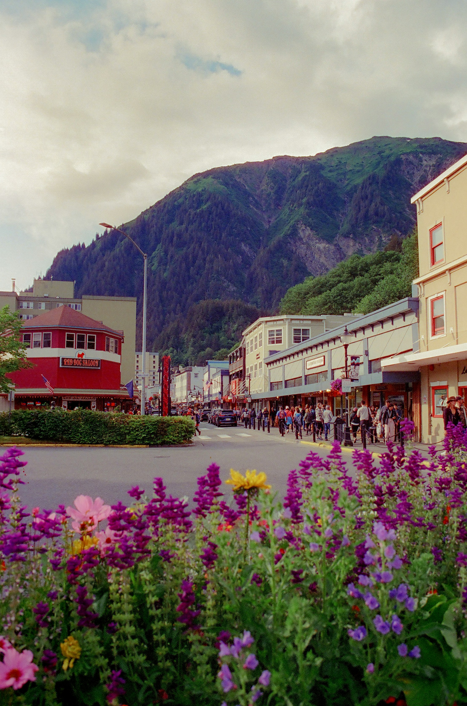
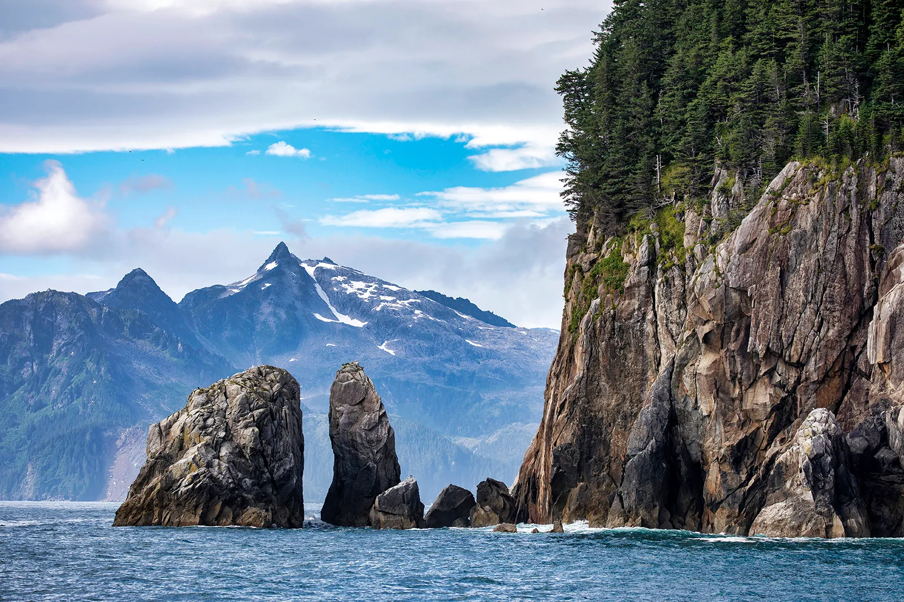
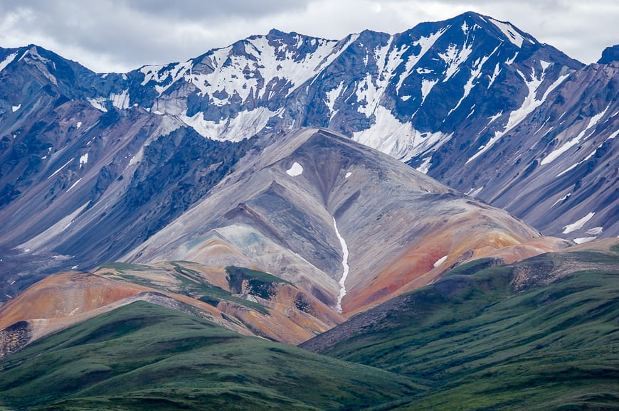
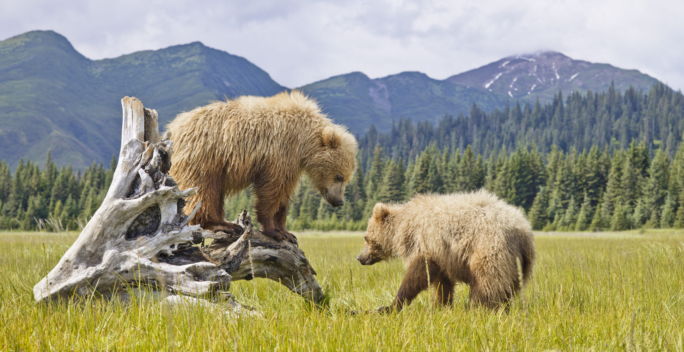

Featured Destination: Juneau, Alaska01. The Elements of Ice & Sky
Walk Upon Millennia-Old Rivers of Ice
Exploring the surface of a living glacier is an deeply grounding experience. Stepping out onto these ancient, moving architectural wonders reveals a spectrum of vibrant cerulean blues, deep-carved crevasses, and a sense of scale that leaves standard travel behind. For an completely elevated transition, arrival via a private helicopter or seaplane flight tracking over untamed valleys positions you on remote icefields far out of reach of standard footprints.


Cross the Threshold of the Arctic Circle
Venturing beyond the imaginary line marking the northernmost tilt of our planet carries a unique geographic prestige. Standing at the boundary of the sub-Arctic offers a profound appreciation for the remote, silent vastness of this captivating tundra. Underneath the summer's endless daylight—the legendary midnight sun—the golden hours seamlessly stretch into morning, giving you limitless clarity to take in the dramatic northern horizon.
02. Marine Sanctuaries & Coastal Path
Witness the Grandeur of Kenai Fjords
This legendary coastal gem frames a world where pristine mountain peaks plunge directly into matching icy waterways. Navigating these waters provides ringside seats to watch massive glaciers calve, dramatically crashing into the sea. These mineral-rich waters serve as a private playground for marine life; matching paces with pod of wild orcas, humpback whales, and soaring bald eagles is an everyday occurrence.

Island Hop via the Coastal Passage
For an authentic, lingering exploration of the dynamic southeastern archipelago, transitioning between coastal towns via marine vessels reveals hidden hamlets and misty evergreen passages that massive cruise liners simply must bypass. It is a slower, deliberate form of travel designed to uncover local customs at your own preferred pace.
03. Ancient Legacies & Wildlife Apex
Immerse in the Alaska Native Heritage Center
Bespoke travel is incomplete without a deep understanding of the human story anchoring a region. Engaging with the interactive exhibits, traditional architecture, and live cultural demonstrations at this world-class venue offers a polished look into the diverse heritages, distinct languages, and deep-rooted customs of the Inuit, Athabaskan, and Yupik peoples.
Traverse the Heart of Denali National Park
Guarding the highest peak in North America, Denali National Park remains the undisputed crown jewel of wilderness sanctuaries. Moving inside its interior parameters, your private excursions are structured around observing iconic apex wildlife—such as majestic brown bears, moose, and Dall sheep—navigating their ancestral territories safely, securely, and with total ecological respect.



Track the Majesty of the Aurora Borealis
While nature maintains its own absolute schedule, timing an interior Alaskan winter itinerary around optimal viewing patterns yields arguably earth’s most breathtaking spectacle. Watching the dancing emerald and violet ribbons of the Northern Lights sweep across a crisp night sky is a memory that forever alters how you view the luxury of travel.